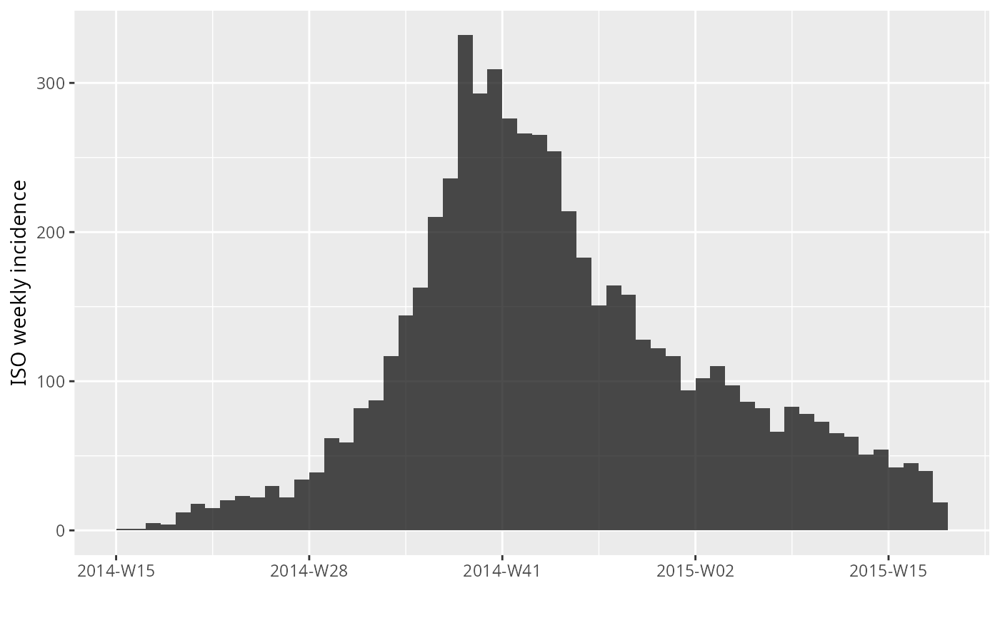
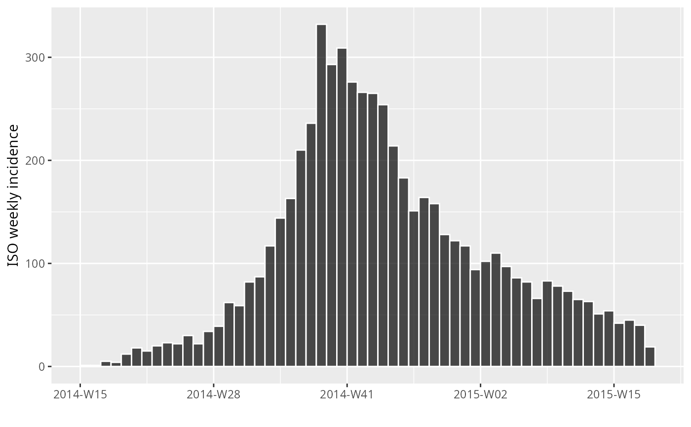
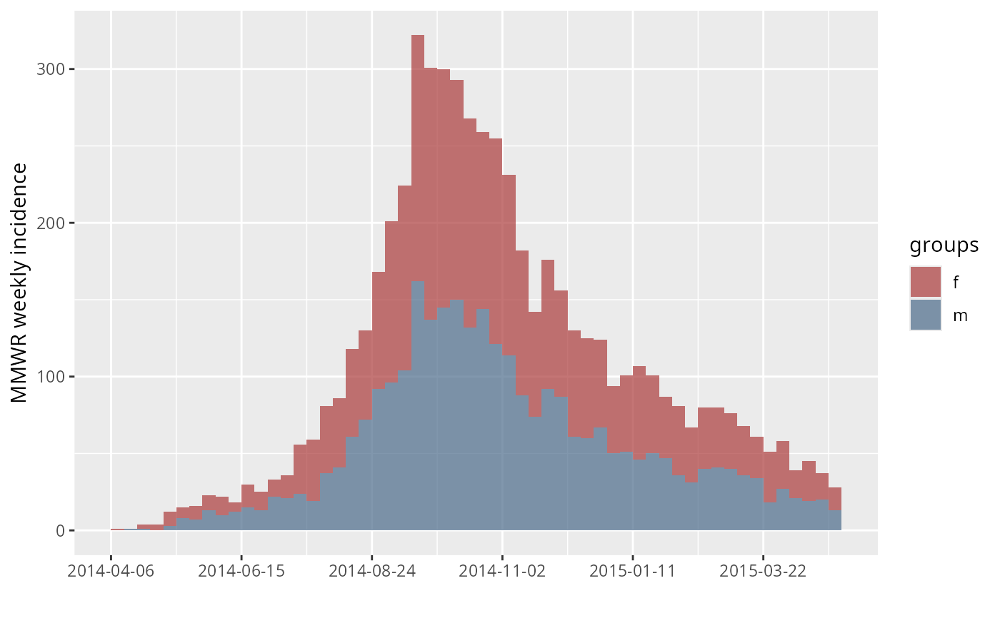
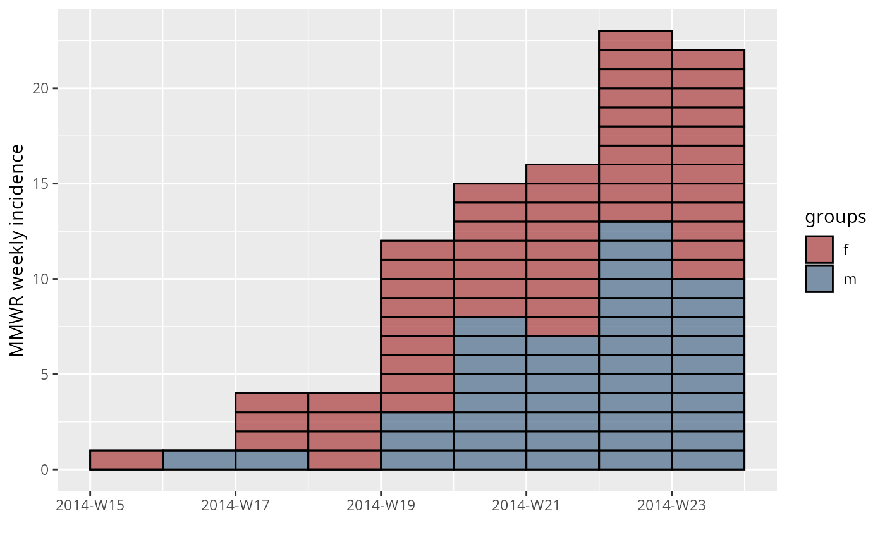
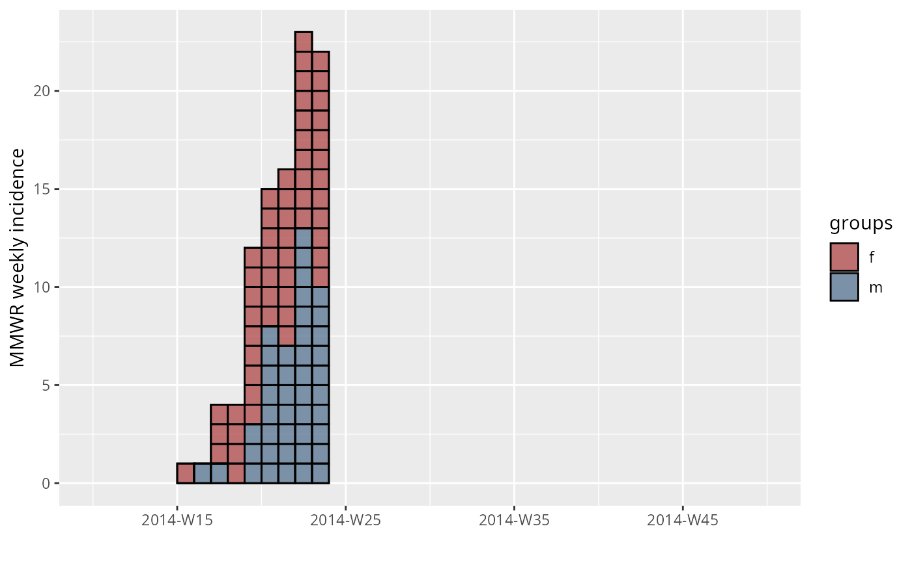
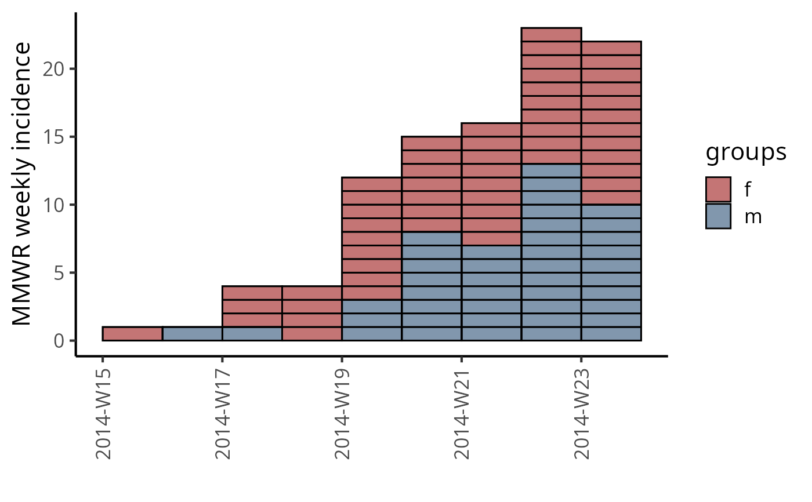
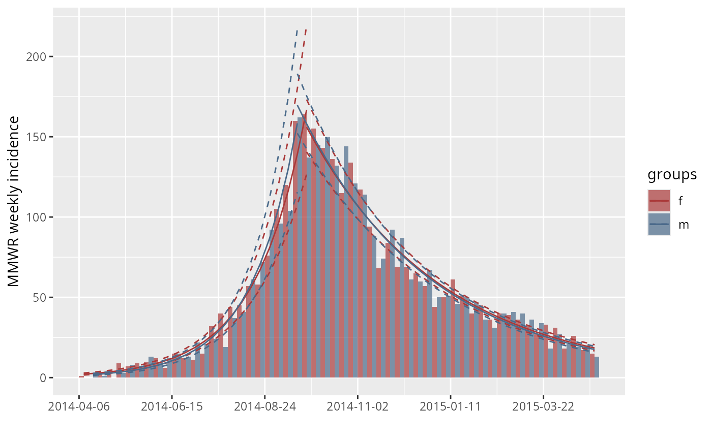

This function is used to visualise the output of the incidence()
function using the package ggplot2. #'
# S3 method for class 'incidence'
plot(
x,
...,
fit = NULL,
stack = is.null(fit),
color = "black",
border = NA,
col_pal = incidence_pal1,
alpha = 0.7,
xlab = "",
ylab = NULL,
labels_week = !is.null(x$weeks),
labels_iso = !is.null(x$isoweeks),
show_cases = FALSE,
n_breaks = 6
)
add_incidence_fit(p, x, col_pal = incidence_pal1)
# S3 method for class 'incidence_fit'
plot(x, ...)
# S3 method for class 'incidence_fit_list'
plot(x, ...)
scale_x_incidence(x, n_breaks = 6, labels_week = TRUE, ...)
make_breaks(x, n_breaks = 6L, labels_week = TRUE)Arguments
- x
An incidence object, generated by the function
incidence().- ...
arguments passed to
ggplot2::scale_x_date(),ggplot2::scale_x_datetime(), orggplot2::scale_x_continuous(), depending on how the$dateelement is stored in the incidence object.- fit
An 'incidence_fit' object as returned by
fit().- stack
A logical indicating if bars of multiple groups should be stacked, or displayed side-by-side.
- color
The color to be used for the filling of the bars; NA for invisible bars; defaults to "black".
- border
The color to be used for the borders of the bars; NA for invisible borders; defaults to NA.
- col_pal
The color palette to be used for the groups; defaults to
incidence_pal1. Seeincidence_pal1()for other palettes implemented in incidence.- alpha
The alpha level for color transparency, with 1 being fully opaque and 0 fully transparent; defaults to 0.7.
- xlab
The label to be used for the x-axis; empty by default.
- ylab
The label to be used for the y-axis; by default, a label will be generated automatically according to the time interval used in incidence computation.
- labels_week
a logical value indicating whether labels x axis tick marks are in week format YYYY-Www when plotting weekly incidence; defaults to TRUE.
- labels_iso
(deprecated) This has been superceded by
labels_iso. Previously:a logical value indicating whether labels x axis tick marks are in ISO 8601 week format yyyy-Www when plotting ISO week-based weekly incidence; defaults to be TRUE.- show_cases
if
TRUE(default:FALSE), then each observation will be colored by a border. The border defaults to a white border unless specified otherwise. This is normally used outbreaks with a small number of cases. Note: this can only be used ifstack = TRUE- n_breaks
the ideal number of breaks to be used for the x-axis labeling
- p
An existing incidence plot.
Value
plot()aggplot2::ggplot()object.make_breaks()a two-element list. The "breaks" element will contain the evenly-spaced breaks as either dates or numbers and the "labels" element will contain either a vector of weeks OR aggplot2::waiver()object.scale_x_incidence()a ggplot2 "ScaleContinuous" object.
Details
plot()will visualise an incidence object usingggplot2make_breaks()calculates breaks from an incidence object that always align with the bins and start on the first observed incidence.scale_x_incidence()produces and appropriateggplot2scale based on an incidence object.
See also
The incidence() function to generate the 'incidence'
objects.
Examples
if(require(outbreaks) && require(ggplot2)) { withAutoprint({
onset <- outbreaks::ebola_sim$linelist$date_of_onset
## daily incidence
inc <- incidence(onset)
inc
plot(inc)
## weekly incidence
inc.week <- incidence(onset, interval = 7)
inc.week
plot(inc.week) # default to label x axis tick marks with isoweeks
plot(inc.week, labels_week = FALSE) # label x axis tick marks with dates
plot(inc.week, border = "white") # with visible border
## use group information
sex <- outbreaks::ebola_sim$linelist$gender
inc.week.gender <- incidence(onset, interval = "1 epiweek", groups = sex)
plot(inc.week.gender)
plot(inc.week.gender, labels_week = FALSE)
## show individual cases at the beginning of the epidemic
inc.week.8 <- subset(inc.week.gender, to = "2014-06-01")
p <- plot(inc.week.8, show_cases = TRUE, border = "black")
p
## update the range of the scale
lim <- c(min(get_dates(inc.week.8)) - 7*5,
aweek::week2date("2014-W50", "Sunday"))
lim
p + scale_x_incidence(inc.week.gender, limits = lim)
## customize plot with ggplot2
plot(inc.week.8, show_cases = TRUE, border = "black") +
theme_classic(base_size = 16) +
theme(axis.text.x = element_text(angle = 90, hjust = 1, vjust = 0.5))
## adding fit
fit <- fit_optim_split(inc.week.gender)$fit
plot(inc.week.gender, fit = fit)
plot(inc.week.gender, fit = fit, labels_week = FALSE)
})}
#> > onset <- outbreaks::ebola_sim$linelist$date_of_onset
#> > inc <- incidence(onset)
#> > inc
#> <incidence object>
#> [5888 cases from days 2014-04-07 to 2015-04-30]
#>
#> $counts: matrix with 389 rows and 1 columns
#> $n: 5888 cases in total
#> $dates: 389 dates marking the left-side of bins
#> $interval: 1 day
#> $timespan: 389 days
#> $cumulative: FALSE
#>
#> > plot(inc)
 #> > inc.week <- incidence(onset, interval = 7)
#> > inc.week
#> <incidence object>
#> [5888 cases from days 2014-04-07 to 2015-04-27]
#> [5888 cases from ISO weeks 2014-W15 to 2015-W18]
#>
#> $counts: matrix with 56 rows and 1 columns
#> $n: 5888 cases in total
#> $dates: 56 dates marking the left-side of bins
#> $interval: 7 days
#> $timespan: 386 days
#> $cumulative: FALSE
#>
#> > plot(inc.week)
#> > inc.week <- incidence(onset, interval = 7)
#> > inc.week
#> <incidence object>
#> [5888 cases from days 2014-04-07 to 2015-04-27]
#> [5888 cases from ISO weeks 2014-W15 to 2015-W18]
#>
#> $counts: matrix with 56 rows and 1 columns
#> $n: 5888 cases in total
#> $dates: 56 dates marking the left-side of bins
#> $interval: 7 days
#> $timespan: 386 days
#> $cumulative: FALSE
#>
#> > plot(inc.week)

#> > plot(inc.week, labels_week = FALSE)
#> > plot(inc.week, border = "white")

#> > sex <- outbreaks::ebola_sim$linelist$gender
#> > inc.week.gender <- incidence(onset, interval = "1 epiweek", groups = sex)
#> > plot(inc.week.gender)
#> > plot(inc.week.gender, labels_week = FALSE)

#> > inc.week.8 <- subset(inc.week.gender, to = "2014-06-01")
#> > p <- plot(inc.week.8, show_cases = TRUE, border = "black")
#> > p

#> > lim <- c(min(get_dates(inc.week.8)) - 7 * 5, aweek::week2date("2014-W50",
#> + "Sunday"))
#> > lim
#> [1] "2014-03-02" "2014-12-07"
#> > p + scale_x_incidence(inc.week.gender, limits = lim)
#> Scale for x is already present.
#> Adding another scale for x, which will replace the existing scale.

#> > plot(inc.week.8, show_cases = TRUE, border = "black") + theme_classic(base_size = 16) +
#> + theme(axis.text.x = element_text(angle = 90, hjust = 1, vjust = 0.5))

#> > fit <- fit_optim_split(inc.week.gender)$fit
#> > plot(inc.week.gender, fit = fit)
#> Scale for colour is already present.
#> Adding another scale for colour, which will replace the existing scale.
#> Scale for colour is already present.
#> Adding another scale for colour, which will replace the existing scale.
#> Scale for colour is already present.
#> Adding another scale for colour, which will replace the existing scale.
#> Scale for colour is already present.
#> Adding another scale for colour, which will replace the existing scale.
#> > plot(inc.week.gender, fit = fit, labels_week = FALSE)
#> Scale for colour is already present.
#> Adding another scale for colour, which will replace the existing scale.
#> Scale for colour is already present.
#> Adding another scale for colour, which will replace the existing scale.
#> Scale for colour is already present.
#> Adding another scale for colour, which will replace the existing scale.
#> Scale for colour is already present.
#> Adding another scale for colour, which will replace the existing scale.
